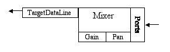

Overview of the Sampled Package
The
javax.sound.sampled
package is fundamentally
concerned with audio transport — in other words, the Java Sound API focuses
on playback and capture. The central task that the Java Sound API addresses
is how to move bytes of formatted audio data into and out of the system. This
task involves opening audio input and output devices and managing buffers that
get filled with real-time sound data. It can also involve mixing multiple streams
of audio into one stream (whether for input or output). The transport of sound
into or out of the system has to be correctly handled when the user requests
that the flow of sound be started, paused, resumed, or stopped.
To support this focus on basic audio input and output, the Java Sound API provides methods for converting between various audio data formats, and for reading and writing common types of sound files. However, it does not attempt to be a comprehensive sound-file toolkit. A particular implementation of the Java Sound API need not support an extensive set of file types or data format conversions. Third-party service providers can supply modules that "plug in" to an existing implementation to support additional file types and conversions.
The Java Sound API can handle audio transport in both a streaming, buffered fashion and an in-memory, unbuffered fashion. "Streaming" is used here in a general sense to refer to real-time handling of audio bytes; it does not refer to the specific, well-known case of sending audio over the Internet in a certain format. In other words, a stream of audio is simply a continuous set of audio bytes that arrive more or less at the same rate that they are to be handled (played, recorded, etc.). Operations on the bytes commence before all the data has arrived. In the streaming model, particularly in the case of audio input rather than audio output, you do not necessarily know in advance how long the sound is and when it will finish arriving. You simply handle one buffer of audio data at a time, until the operation is halted. In the case of audio output (playback), you also need to buffer data if the sound you want to play is too large to fit in memory all at once. In other words, you deliver your audio bytes to the sound engine in chunks, and it takes care of playing each sample at the right time. Mechanisms are provided that make it easy to know how much data to deliver in each chunk.
The Java Sound API also permits unbuffered transport in the case of playback only, assuming you already have all the audio data at hand and it is not too large to fit in memory. In this situation, there is no need for the application program to buffer the audio, although the buffered, real-time approach is still available if desired. Instead, the entire sound can be preloaded at once into memory for subsequent playback. Because all the sound data is loaded in advance, playback can start immediately — for example, as soon as the user clicks a Start button. This can be an advantage compared to the buffered model, where the playback has to wait for the first buffer to fill. In addition, the in-memory, unbuffered model allows sounds to be easily looped (cycled) or set to arbitrary positions in the data.
To play or capture sound using the Java Sound API, you need at least three things: formatted audio data, a mixer, and a line. The following provides an overview of these concepts.
What is Formatted Audio Data?
Formatted audio data refers to sound in any of a number of standard formats. The Java Sound API distinguishes between data formats and file formats.Data Formats
A data format tells you how to interpret a series of bytes of "raw" sampled audio data, such as samples that have already been read from a sound file, or samples that have been captured from the microphone input. You might need to know, for example, how many bits constitute one sample (the representation of the shortest instant of sound), and similarly you might need to know the sound's sample rate (how fast the samples are supposed to follow one another). When setting up for playback or capture, you specify the data format of the sound you are capturing or playing.
In the Java Sound API, a data format is represented by an
AudioFormat
object, which includes the following attributes:
- Encoding technique, usually pulse code modulation (PCM)
- Number of channels (1 for mono, 2 for stereo, etc.)
- Sample rate (number of samples per second, per channel)
- Number of bits per sample (per channel)
- Frame rate
- Frame size in bytes
- Byte order (big-endian or little-endian)
PCM is one kind of encoding of the sound waveform. The Java Sound API includes two PCM encodings that use linear quantization of amplitude, and signed or unsigned integer values. Linear quantization means that the number stored in each sample is directly proportional (except for any distortion) to the original sound pressure at that instant—and similarly proportional to the displacement of a loudspeaker or eardrum that is vibrating with the sound at that instant. Compact discs, for example, use linear PCM-encoded sound. Mu-law encoding and a-law encoding are common nonlinear encodings that provide a more compressed version of the audio data; these encodings are typically used for telephony or recordings of speech. A nonlinear encoding maps the original sound's amplitude to the stored value using a nonlinear function, which can be designed to give more amplitude resolution to quiet sounds than to loud sounds.
A frame contains the data for all channels at a particular time. For PCM-encoded data, the frame is simply the set of simultaneous samples in all channels, for a given instant in time, without any additional information. In this case, the frame rate is equal to the sample rate, and the frame size in bytes is the number of channels multiplied by the sample size in bits, divided by the number of bits in a byte.
For other kinds of encodings, a frame might contain additional information besides the samples, and the frame rate might be completely different from the sample rate. For example, consider the MP3 (MPEG-1 Audio Layer 3) encoding, which is not explicitly mentioned in the current version of the Java Sound API, but which could be supported by an implementation of the Java Sound API or by a third-party service provider. In MP3, each frame contains a bundle of compressed data for a series of samples, not just one sample per channel. Because each frame encapsulates a whole series of samples, the frame rate is slower than the sample rate. The frame also contains a header. Despite the header, the frame size in bytes is less than the size in bytes of the equivalent number of PCM frames. (After all, the purpose of MP3 is to be more compact than PCM data.) For such an encoding, the sample rate and sample size refer to the PCM data that the encoded sound will eventually be converted into before being delivered to a digital-to-analog converter (DAC).
File Formats
A file format specifies the structure of a sound file, including not only the format of the raw audio data in the file, but also other information that can be stored in the file. Sound files come in various standard varieties, such as WAVE (also known as WAV, and often associated with PCs), AIFF (often associated with Macintoshes), and AU (often associated with UNIX systems). The different types of sound file have different structures. For example, they might have a different arrangement of data in the file's "header." A header contains descriptive information that typically precedes the file's actual audio samples, although some file formats allow successive "chunks" of descriptive and audio data. The header includes a specification of the data format that was used for storing the audio in the sound file. Any of these types of sound file can contain various data formats (although usually there is only one data format within a given file), and the same data format can be used in files that have different file formats.
In the Java Sound API, a file format is represented by an
AudioFileFormat
object, which contains:
- The file type (WAVE, AIFF, etc.)
- The file's length in bytes
- The length, in frames, of the audio data contained in the file
- An AudioFormat object that specifies the data format of the audio data contained in the file
The
AudioSystem
class
provides methods for reading and writing sounds in
different file formats, and for converting between different data formats. Some
of the methods let you access a file's contents through a kind of stream called
an
AudioInputStream
. An AudioInputStream is a subclass
of the
InputStream
class, which encapsulates a series
of bytes that can be read sequentially. To its superclass, the AudioInputStream
class adds knowledge of the bytes' audio data format (represented by an AudioFormat
object). By reading a sound file as an AudioInputStream, you get
immediate access to the samples, without having to worry about the sound file's
structure (its header, chunks, etc.). A single method invocation gives you all
the information you need about the data format and the file type.
What is a Mixer?
Many application programming interfaces (APIs) for sound make use of the notion of an audio device. A device is often a software interface to a physical input/output device. For example, a sound-input device might represent the input capabilities of a sound card, including a microphone input, a line-level analog input, and perhaps a digital audio input.
In the Java Sound API, devices are represented by
Mixer
objects. The purpose of a mixer is to handle one or more streams of audio input and one or more streams of audio output. In the typical case, it actually mixes together multiple incoming streams into one outgoing stream. A Mixer object can represent the sound-mixing capabilities of a physical device such as a sound card, which might need to mix the sound coming in to the computer from various inputs, or the sound coming from application programs and going to outputs.
Alternatively, a Mixer object can represent sound-mixing capabilities that are implemented entirely in software, without any inherent interface to physical devices.
In the Java Sound API, a component such as the microphone input on a sound card is not itself considered a device — that is, a mixer — but rather a port into or out of the mixer. A port typically provides a single stream of audio into or out of the mixer (although the stream can be multichannel, such as stereo). The mixer might have several such ports. For example, a mixer representing a sound card's output capabilities might mix several streams of audio together, and then send the mixed signal to any or all of various output ports connected to the mixer. These output ports could be (for example) a headphone jack, a built-in speaker, or a line-level output.
To understand the notion of a mixer in the Java Sound API, it helps to visualize a physical mixing console, such as those used in live concerts and recording studios.

A Physical Mixing Console
Imagine a live concert that is being recorded in stereo. Cables (or wireless connections) coming from the many microphones and electric instruments on stage are plugged into the inputs of the mixing console. Each input goes to a separate strip of the mixer, as illustrated. The sound engineer decides on the settings of the gain, pan, and reverb controls. The output of all the strips and the reverb unit are mixed together into two channels. These two channels go to two outputs on the mixer, into which cables are plugged that connect to the stereo tape recorder's inputs. The two channels are perhaps also sent via an amplifier to speakers in the hall, depending on the type of music and the size of the hall.
Now imagine a recording studio, in which each instrument or singer is recorded to a separate track of a multitrack tape recorder. After the instruments and singers have all been recorded, the recording engineer performs a "mixdown" to combine all the taped tracks into a two-channel (stereo) recording that can be distributed on compact discs. In this case, the input to each of the mixer's strips is not a microphone, but one track of the multitrack recording. Once again, the engineer can use controls on the strips to decide each track's volume, pan, and reverb amount. The mixer's outputs go once again to a stereo recorder and to stereo speakers, as in the example of the live concert.
These two examples illustrate two different uses of a mixer: to capture multiple input channels, combine them into fewer tracks, and save the mixture, or to play back multiple tracks while mixing them down to fewer tracks.
In the Java Sound API, a mixer can similarly be used for input (capturing audio) or output (playing back audio). In the case of input, the source from which the mixer gets audio for mixing is one or more input ports. The mixer sends the captured and mixed audio streams to its target, which is an object with a buffer from which an application program can retrieve this mixed audio data. In the case of audio output, the situation is reversed. The mixer's source for audio is one or more objects containing buffers into which one or more application programs write their sound data; and the mixer's target is one or more output ports.
What is a Line?
The metaphor of a physical mixing console is also useful for understanding the Java Sound API's concept of a line.
A line is an element of the digital audio "pipeline"—that is, a path for moving audio into or out of the system. Usually the line is a path into or out of a mixer (although technically the mixer itself is also a kind of line).
Audio input and output ports are lines. These are analogous to the microphones and speakers connected to a physical mixing console. Another kind of line is a data path through which an application program can get input audio from, or send output audio to, a mixer. These data paths are analogous to the tracks of the multitrack recorder connected to the physical mixing console.
One difference between lines in the Java Sound API and those of a physical mixer is that the audio data flowing through a line in the Java Sound API can be mono or multichannel (for example, stereo). By contrast, each of a physical mixer's inputs and outputs is typically a single channel of sound. To get two or more channels of output from the physical mixer, two or more physical outputs are normally used (at least in the case of analog sound; a digital output jack is often multichannel). In the Java Sound API, the number of channels in a line is specified by the
AudioFormat
of the data that is currently flowing through the line.
Let's now examine some specific kinds of lines and mixers. The following diagram shows different types of lines in a simple audio-output system that could be part of an implementation of the Java Sound API:

A Possible Configuration of Lines for Audio Output
Although the various lines are depicted as separate rectangles in the diagram, they are all "owned" by the mixer, and can be considered integral parts of the mixer. The reverb, gain, and pan rectangles represent processing controls (rather than lines) that can be applied by the mixer to data flowing through the lines.
Note that this is just one example of a possible mixer that is supported by the API. Not all audio configurations will have all the features illustrated. An individual source data line might not support panning, a mixer might not implement reverb, and so on.
A simple audio-input system might be similar:

A Possible Configuration of Lines for Audio Input
The Line Interface Hierarchy
Now that we've seen some functional pictures of what lines and mixers are,
let's discuss them from a slightly more programmatic perspective.
Several types of line are defined by subinterfaces of the basic
Line
interface. The interface hierarchy is shown below.

The Line Interface Hierarchy
The base interface,
Line,
describes the minimal functionality common to all lines:
- Controls – Data lines and ports often have a set of controls that affect the audio signal passing through the line. The Java Sound API specifies control classes that can be used to manipulate aspects of sound such as: gain (which affects the signal's volume in decibels), pan (which affects the sound's right-left positioning, reverb (which adds reverberation to the sound to emulate different kinds of room acoustics), and sample rate (which affects the rate of playback as well as the sound's pitch).
- Open or closed status – Successful opening of a line guarantees that resources have been allocated to the line. A mixer has a finite number of lines, so at some point multiple application programs (or the same one) might vie for usage of the mixer's lines. Closing a line indicates that any resources used by the line may now be released.
- Events –
A line generates events when it opens or closes. Subinterfaces of
Linecan introduce other types of events. When a line generates an event, the event is sent to all objects that have registered to "listen" for events on that line. An application program can create these objects, register them to listen for line events, and react to the events as desired.
Line interface.
Ports
are simple lines for input or output of audio to or from audio devices. As mentioned earlier, some common types of ports are the microphone, line input, CD-ROM drive, speaker, headphone, and line output.
The
Mixer
interface represents a mixer, of course, which as we have seen represents either a hardware or a software device. The Mixer interface provides methods for obtaining a mixer's lines. These include source lines, which feed audio to the mixer, and target lines, to which the mixer delivers its mixed audio. For an audio-input mixer, the source lines are input ports such as the microphone input, and the target lines are
TargetDataLines
(described below), which deliver audio to the application program. For an audio-output mixer, on the other hand, the source lines are
Clips
or
SourceDataLines
(described below), to which the application program feeds audio data, and the target lines are output ports such as the speaker.
A Mixer is defined as having one or more source lines and one or more target lines. Note that this definition means that a mixer need not actually mix data; it might have only a single source line. The Mixer API is intended to encompass a variety of devices, but the typical case supports mixing.
The Mixer interface supports synchronization; that is, you can specify that two or more of a mixer's lines be treated as a synchronized group. Then you can start, stop, or close all those data lines by sending a single message to any line in the group, instead of having to control each line individually. With a mixer that supports this feature, you can obtain sample-accurate synchronization between lines.
The generic Line interface does not provide a means to start and stop playback or recording. For that you need a data line. The
DataLine
interface supplies the following additional media-related features beyond those of a Line:
START and STOP events are produced when active presentation or capture of data from or to the data line starts or stops.
A TargetDataLine receives audio data from a mixer. Commonly, the mixer has captured audio data from a port such as a microphone; it might process or mix this captured audio before placing the data in the target data line's buffer. The TargetDataLine interface provides methods for reading the data from the target data line's buffer and for determining how much data is currently available for reading.
A SourceDataLine receives audio data for playback. It provides methods for writing data to the source data line's buffer for playback, and for determining how much data the line is prepared to receive without blocking.
A Clip is a data line into which audio data can be loaded prior to playback. Because the data is pre-loaded rather than streamed, the clip's duration is known before playback, and you can choose any starting position in the media. Clips can be looped, meaning that upon playback, all the data between two specified loop points will repeat a specified number of times, or indefinitely.
This section has introduced most of the important interfaces and classes of the sampled-audio API. Subsequent sections show how you can access and use these objects in your application program.